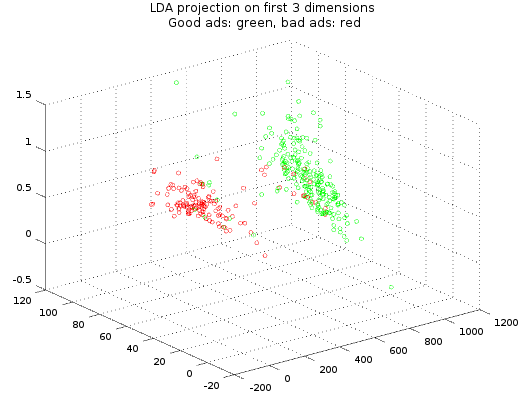

A selection of sample code, from production code as well as proof of concepts and studies, with brief descriptions of the related projects. Some of them also appear in the list of projects.
Please note, that the code samples are for most parts quite abbreviated and altered to protect the rights of the employer and/or customer. For some proofs of concept there are compilable solutions, though.
ELT
ELT-Jobs were sort of everything-within-oracle version of ETL, eventually feeding a master data management system, also on Oracle.
Initial extraction was done with Oracle Loader, loading comma separated and fixed length formats to staging tables, non-recoverable and non-logged in append mode. Wherever possible type conversion was left to the loader too, as in the examples shown.
Where not, type conversion was handled in transformation views, usually simultaneously with the application of business rules. The latter could be rather elaborate functions like the peculiar amend date decoding in this package (check_amenddt, test_amend_date), where also the default insert-from-view error handling is shown (load_data).
In one case I was happy to find an occasion to apply a parallel pipelined function (plus the related implementing package for the decoding proper) to extract raw values from a colon-separated-key-value-pairs format to feed a subsequent transformation view and loading to the final staging table. In this case the Oracle loader file is trivial.
Business rule views also could come in their own right, like in this example from rating processing, where the analytical functions of Oracle handed themselves nicely to implement a given set of requirements.
Rating processing for different providers proved to be uniform enough to apply the same strategy to all of them by constructing sql at runtime (uniform table names were no option). Access to the master data was the bottleneck, therefore caching (g_mdm_classnames, FUNCTION get_class_name) and one time copies of relevant master data (e.g. rating symbols, PROCEDURE collect_symbols) were employed and table statistics kept up to date (gather_table_stats).
Master data management synchronization
Master data management synchronization usually meant, to apply sanity checks, business rules and mappings in Pl/Sql to incoming data and feed the results through a Pl/Sql-api to the database while considering defined mutation rules. The sample is a tiny fraction of asset synchronization, a rather central task.Since heavy use of objects was made on all levels, occasionally object representations had to be serialized. Aside custom ELT, data traveled via Xml messaging, including creation and sending as well as consumption. The latter used DOM-access and XQuery.
A study to use Linq syntax to express data processing sequences with the goal to create non-graphical workflow definitions that can be suspended, persisted and resumed. It is possible, but very limited. F# computation sequences could be used the same way, being more expressive.
A byproduct that eventually became production code was a simple high level ftp class with specialized subclasses to provide straight forward ftp functionality, implemented with .net web requests, and emulated ftp functionality operating on the file system. The latter was used to emulate the ftp delivery logic of different data providers.
Proof of concept and pilot application - generate an object model from meta-data definitions from Six Telekurs and show, that it is possible to re-implement existing sql-queries on that data-feed using the object model and Linq. The final model provided by another party was closely related. On that I based core production code elements of the initial implementation of extractions, thought it was not appropriate to mimic Sql there.
Elements of a client-server data processing framework, with a client part that defines, initiates and monitors sequences of data processing and a server part, responsible for execution and co-ordination of concurrent client requests. Requests came in form of data processing messages (TDpMessageCommon), bundling sequences of commands and their execution parameters. The server translates (uActionFactory_b, uActionFactoryFetchExternalData) them to actions (uAction_b, uDbActions) which eventually get executed. Client- server- and associated proxy-classes are not included here.
Elements of a generic storage and data retrieval framework, that I implemented following an abstract design (uDataAccessLayer_a) aimed at the provider structure level. Everything down to the physical tables had to be spelled out. It supports native simultaneous access to Oracle, Db2 (including transparent DML array loading), DbIsam and non-natively anything that BDE supported. Data writing is tree oriented and handles update operations transparently for using classes. It is meta-data driven, meta-data is a terse pointer structure roughly like this one. The abstract level was backed by custom classes and eventually by a general table access layer (uCustomTableAccess) with database specific implementations, hiding the nasty details. For examples of nasty details see uOraTableExt, uSQLFormat_DB2 and uDB2Writer. Database structures get generated from meta-data and can be altered automatically on meta-data changes.
Goolge Fusion Tables Query Console
Google fusion tables are handy, but there wasn't a tool to quickly hack some fusion tables sql, so I made one. From the sales folder:
For a quick start with Google fusion tables sql: code completion, context sensitive sql snippets with table or column parameters, refer to tables by name or ID, syntax highlighting covering syntactic and semantic errors. Delete, rename and copy tables by sql.
In quite some aspects it has characteristics of a learning project, especially as the parsing and digging-in-syntax parts are concerned, which for the major part consisted of filling-in the necessary parts into generated Antlr-Listeners. Apart from the Antlr5-grammar this isn't the most elegant task anyway, since you have to manage to scrape meaning from usually incomplete code fragments. On the more structured side are the connector interface and its implementation for the Fusion Tables Java api and the MVC variation for the graphic and command line UI both implementing the common abstraction for the front end which is then linked to the controller and the related model.
technology
: Java7, Antlr4, Google fusion tables api v2, RSyntaxTextArea code
editor and autocomlete component, bash scripting, JUnit, Maven, Eclipse Mars, Git, Meld diff
- Article on codeproject.com
- project page
- Code on Github
Intelligent Advertisement Scraping Framework
A near real time advertisement scraping framework with email notifications.
This began as a personal toy, but now always some friends are on the mailing list. I do not want to make it available for the public, though, since it gives the technically savvy yet another advantage over the not so skilled, like you have it at the car market already.
Apache Lucene indexing and query is used for stemming, tokenization, number detection, and fuzzy/word vicinity querying, allowing for queries like "Find matches for keyword 'provision' with an Levensthein edit distance <= 2 and a number token in it's vicinity, not further than 2 words away in either direction". I put it on Google Appengine, using Dygraph charting for some
visualization. See the stat page of a life specimen here.
Code is on github.
Machine learning training data is hosted at Google Fusion Tables and integrated using Googles REST api.
Scala was useful for a generic expression parser/avaluater component to filter advertisements for recipients according to defined rules of the kind 400 <= prize <= 850 & size >= 50 & passes(description, foulEmailFilter).
technology
: Scala, Java7, Apache Lucene indexing and query, Dygraph JavaScript charting, Google fusion tables api v2, Octave/Matlab script, mainstream machine learning, JUnit, Maven, Eclipse Juno, Git, Meld diff
Machine Learing Excursus
Seeing the significant amount of fraudulent advertisements, at times up to 40% in the budget range, and the reluctance or inability of some portals to provide effective filters and procedures to prevent it, I added some machine learning to get rid of it.It turned out, that valid and invalid ads aren't cleanly separable. First thinking of support vector machines or neuronal networks, eventually a simple logistic classifier with a low detection threshold (0.1) was most suitable for the task. It gives the high precision needed (>96%) in order not to filter valid ads, at the cost of a rather low recall of about 60%, which is acceptable here.
This way everything needed in Java was the polynomial/sigmoid evaluation function which was easy to write by hand. The modelling and training part I left in Matlab/Octave script language.
I should mention, that linear discriminant analysis (LDA) showed a better overall performance, but provided lower precision, which was not preferrable in this case. It gives nice visualizations though, and the intersection of good and bad ads can also be seen there, confirming the initial hypothesis, that unusually low prize per square meter ratio indicates bad ads, though not always. The projection is on price, size and the "contains email" indicator.
